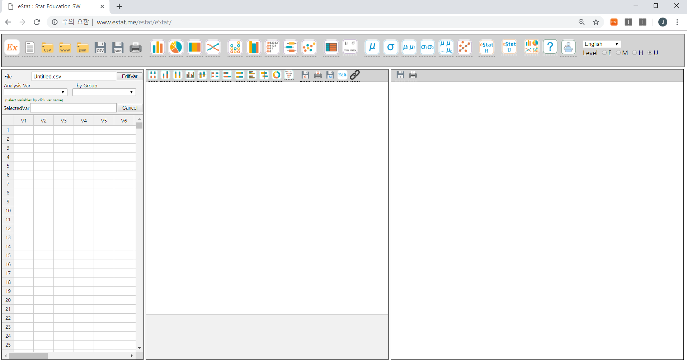
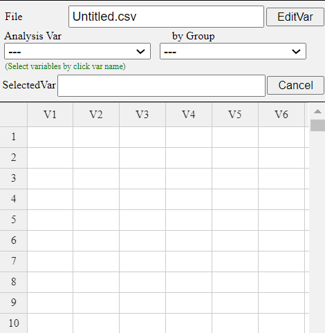
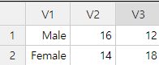
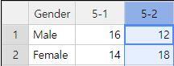
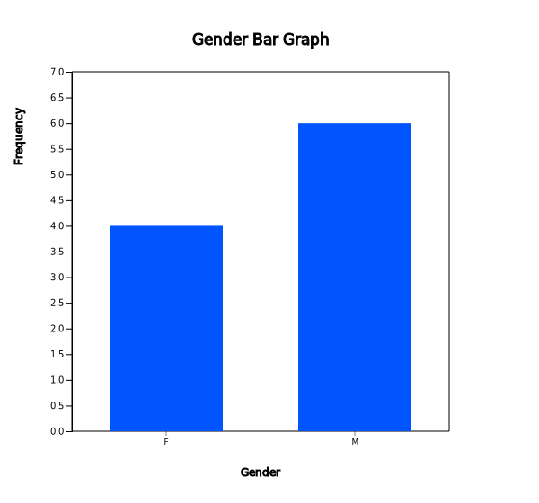

『eStat』 Basic Operation and Data Manipulation
Author: Professo Jung Jin Lee, Soongsil University, Korea (jjlee@ssu.ac.kr)
『eStat』 Basic Operation pdf- 『eStat』 Basic Operation
- Entering 『eStat』 System
- Data Input / Save / Open
- Data Analysis
- Save Graph and Print
- Exit 『eStat』 System
- 『eStat』 Data Manipulation
1. 『eStat』 Basic Operation
|
|
1.1 Entering 『eStat』 SystemClick the Chrome browser icon on your computer and type the address in the address box that appears. The main screen of『eStat』will appear as shown in <Figure 1.1>.

|
|
If your smart phone can read the QR code as in the left, you can see the same screen of 『eStat』 as <Figure 1.1> on your smartphone.
You can also enter the address at http:/www.estat.me on your smartphone web browser, preferably Chrome. Although data input using the sheet of 『eStat』 on your smartphone is not convenient because of its small screen, you can use all other modules as your personal computer. A lecture video to introduce Basic Operation of 『eStat』 is located at the following address.
『eStat』 Lecture https://www.youtube.com/watch?v=jjfCqdDZZ6Q At the top of 『eStat』 main screen, several icons (buttons) are arranged. There is also a combo box to select a language and radio buttons to select a level. These icons are the main menu of 『eStat』 system which is a different design as in many other softwares which use a foldable drop-down menu. We believe that the icon menu of 『eStat』 makes users comfortable to see what they can do using 『eStat』 at a glance. However, modules for the middle/high school level and the university level have a variety of submenu separately. If you click on icons 『eStatH』 and 『eStatU』, you can see the detailed menu of 『eStatH』 as in <Figure 1.2> and 『eStatU』 as in <Figure 1.3> at a new window. |
|
|
|
<Figure 1.2> Menu of the 『eStatH』 for the Middle/High School Students |
|
|
<Figure 1.3> Menu of the 『eStatU』 for the University Students |
|
The left side of the main screen is Sheet Area for data entry as in <Figure 1.4>. On top of the Sheet Area, there are boxes for variable selection which select the Analysis Var and by Group variable. There are also boxes for the Selected Var to show the variables selected and for File to input a file name. The center of the main screen is Graph Area which shows the graph of a data analysis. There are also several smaller icons for changing a graph into other type. The right side of the main screen is Log Area which shows the result of an analysis and can store the graph which is in the Graph Area if needed.

|
1.2 Data Input / Save / OpenEntering data in 『eStat』
You can enter data on the sheet of the main screen. Each row of the sheet which is numbered as 1, 2, ... , represents an observation, and each column which is denoted as V1, V2, ... , represents a variable of the observation. If you click on the row 1 and the column V1 using the mouse, the row number and the column number for this cell are displayed in dark grey color unlike other cell, and the cell has a rectangular contour with blue color as in <Figure 1.5> which is called a cursor. This means that the cell where the cursor is located is ready to accept data which is a similar function to the Excel. The cursor can move from one cell to another cell using the arrow keys ← → ↑ ↓ or one page to another page using the PageUp and PageDown key.
Since 『eStat』 is a web based software for educational purpose, the maximum number of rows is limited to 9,999 observations and the maximum number of columns is limited to 20 variables. You can enter data from the first row of the upper left cell (observation number 1, variable V1) and then use the down arrow key ↓ (or ↵ key) to move the cursor to the cell below (row 2, column V1) to enter the following data. In the same way, all data can be entered into each cell while moving the cursor using the arrow keys (←, →, ↑, ↓). <Figure 1.6> shows an example of data input for the number of male students and female students at two classes (named ‘5-1’ and ‘5-2’) in an elementary school. In each cell, you can enter data either characters or numbers, but we assume that all data in a single column should be the same regardless of being character data or numeric data. Mixture of characters and numbers in a cell is considered as the character data and real number which has decimal digits after dot(‘.’) is considered as the numeric data.

Bar graph, pie chart, and band graph can be drawn by using both the character data and the numeric data. However, dot graph, histogram, stem and leaf plot for quantitative data must use the numeric data. The character data can be used as a group variable for the graphs of quantitative data.. In <Figure 1.6>, all data are visible on the sheet appeared on the main screen. If data are large and only some part of the data appeared on the sheet, you can use the PageUp and PageDown key to move up and down by page, or can move the end of left / right / up / down of the data by pressing both the Ctrl key and arrow keys (←, →, ↑, ↓). Enter the variable name and the value label of a variable
If data are entered into 『eStat』 without assigning the variable name and if they are processed for a statistical analysis, the result of the analysis will have a variable name such as V1 (implies Variable 1), V2 (implies Variable 2) and so on. It would be better for users to see the result with the name of the variable similar to their actual name and also the value label of the variable.
Click [EditVar] button located above of the sheet. If you see the dialog box as In <Figure 1.7>, enter 'Gender' instead of 'V1' to the box of ‘Variable Name’. Select 'V2' at the combo box, then enter the class name '5-1'. Similarly, select ‘V3’, then enter '5-2'. It is recommended to limit the number of characters for a variable name or a value label up to 8 characters if possible.
After the variable names are entered, click [Save] button and [Exit]. The data will have the variable names as in <Figure 1.8>.

For raw data, you can specify the value labels of a variable using the same dialog box of [EditVar] button as in <Figure 1.7>. But, the maximum number of the value labels is limited up to 9 labels. Modifying data
If you want to modify the data entered in a cell, you can place the cursor in the desired cell to modify and enter new data. If you want to modify only a part of the data entered in a cell, you can modify it by clicking the desired cell twice and by moving the pointer to the desired position using the arrow keys (←, →). |
|
|
|
Save data
Since the data input of 『eStat』 utilizes the main memory of a computer, if power is lost, all data you entered will be lost. Therefore, once you entered all data, you must save it on a secondary memory device, such as a hard disk or an USB. In order to save the data you entered, enter a file name at the box of ‘File’ as in <Figure 1.9>. Then click the ‘CSV Save’ icon to save the data including the variable name. The data file is saved at the ‘download’ folder of your computer as a text file in CSV (comma separated value) format and the file name will have a csv extension automatically. For example, if you saved your data with a file name ‘021Summary_StudentByGender.csv’ as in <Figure 1.9>, then you can see your saved file using the Notepad as in <Figure 1.10>. It shows the separation of each data using comma (‘,’) and the first row consists of the variable names separated by comma. The text file in ‘CSV’ format can be loaded to the Excel and other softwares.
|
|
|
If the value labels of a variable are assigned, you have to save your data using the ‘JSON Save’ icon which will save your data in JSON file format. The file name extension is json. This file will also be saved at the 'download' folder of your computer. |
|
|
Retrieve the saved file
The file in CSV format saved on your computer can be retrieved using the ‘CSV Open’ icon . The file in CSV format saved on a web server computer can be retrieved using the ‘www Open’ icon . The file in JSON format saved on your computer can be retrieved using the ‘JSON Open’ icon . |


|
|
1.3 Data AnalysisAnalysis of the frequency table data
Data as in <Figure 1.9> are referred to as the frequency table data of a categorical variable. If you click on the variable names 'Gender', '5-1' and '5-2' sequentially in the Sheet as in <Figure 2.5>, you will see the selected variable names 'V1 V2 V3' at the box of ‘Selected Var’. Then a vertical bar graph which is the default graph of 『eStat』 , will be appeared on the Graph Area as in <Figure 3.1>. Instead of mouse clicking on the variable names, you can select the ‘Gender’ variable at the combo box of the ‘Analysis Var’ which is located above the sheet and select the variable names, '5-1' and '5-2', at the combo box of 'By Group'. You can see the same graph on your smartphone if it can recognize the QR code at the left hand side of <Figure 1.11>.
|
|
|
The main title, Y-axis title and X-axis title of a graph can be modified with desired contents. If you click the [Edit] button located above the Graph Area, the following dialog box as in <Figure 1.12> will be appeared at the below of the graph. After you change the main title, Y-axis title and X-axis title here, click the [Modify] button.
|
|
Analysis of the raw data
The processing of the raw data as in<Figure 1.13>, is similar to the processing of the frequency table data as in the above example. Enter the data in column V1 of the sheet except the variable name. Enter the variable name by clicking [EditVar] button located above the sheet, and enter 'Gender' instead of V1 at the box of ‘Variable Name’.
|
|
|
|
After you entered the data, if you click on the variable name 'Gender' using your mouse, the box of the 'Selected Var’ will display 'V1' which implies the first variable is selected. Then the default vertical bar graph will be appeared as in <Figure 1.14>. This is a bar graph after counting the number of male (‘M’) and female (‘F’) students in the raw data in <Figure 1.13>. You can see the same graph on your smartphone if it can recognize the QR code at the left hand side of <Figure 1.14>,

|
|
|
While the gender variable is selected, if you click the icon of pie chart, a pie chart will be appeared in the Graph Area. If you click the icon of band graph, a band graph will be appeared. If you click the icon of line graph, a line graph will be appeared. |


|
|
1.4 Save Graph and PrintClick the ‘Graph Save’ icon located above the Graph Area to save the graph. Then the current graph of the Graph Area will be saved with a file name ‘eStatGraph.png’ which is shown at the bottom left of the main screen as in <Figure 1.15>.
|
|
|
The location of the graph file saved is the download folder specified in your computer system. If you save another graph, eStatGraph(1).png will be created in the download folder. Number in parentheses of the file will be increased whenever you save a new graph.
In order to print the graph, click the ‘Graph Print’ icon located above the Graph Area. This will display the print-out screen provided by the Window system as in <Figure 1.16>, where click on the [Print] button to print the graph on the specified printer.
|
|
|
If necessary, the graph on the Graph Area can be moved to the Log Area. Press the ‘Graph Move’ icon located above the Graph Area to move the current graph on the Graph Area to the end of the content on the Log Area.
To save the content on the Log Area, click the ‘Table Save’ icon located above the Log Area. The content on the Log Area will be saved as the ‘eStatLog.html’ file in the download folder as shown at the bottom left corner of the main screen. The saved file has an ‘html’ extension and can be retrieved from the MS Word.
To print the content on the Log Area, click the Print icon located above the Log Area. Then the print-out screen by the Window system will be appeared. If you click the [Print] button here, all the content on the Log Area will be printed at the specified printer. |

1.5 Exit 『eStat』 SystemTo exit 『eStat』 system, simply exit the browser by clicking the ☒ button located at the upper right corner of the browser.
|
2. 『eStat』 Data Manipulation
|
『eStat』 has various data manipulation functions like other statistical packages.
Open a file from 『eStat』 [Ex] > '02Korean' > '040MixedSurvey.csv' and let us practice data manipulation.
This data consists of 40 rows and 6 columns, and the meaning of each value label of categorical variables are as follows:
V1 Gender 1:Men, 2:Female |
2.1 Variable Name and Value LabelIn 『eStat』, if you click the [EditVar] button on the sheet, a dialog box as shown in <Figure 1.18> appears.
|
|
|
On the screen, 'V1: Gender' is selected and value labels 1 and 2 are displayed. On the right side of the screen,
input 'male' and 'female' as the name of the value label. Select another categorical variable and enter the variable name,
and value labels in the same way. Names of up to 9 categorical variables can be entered.
After the input is finished, press the [Save] button and then the [Exit] button. The system memorizes the value labels, but you have to save it in json format, and you have to use json load when you open the saved file.
|
2.2 SortingIn 『eStat』, click the [EditVar] button on the sheet and then click 'Sort' in the popup menu to display a dialog box like <Figure 1.19>.
Select the sorting variable and sorting method in ascending or descending order, and click the [Execute] button to display the sorted data on the sheet. You can select up to three sorting variables. Within the first variable is sorted, the second variable is sorted, and again the first and second variables are sorted, the third variable is sorted within sorted. Data sorted in ascending order of Age is shown in <Figure 1.20>.
|

2.3 CategorizeIn 『eStat』, click the [EditVar] button on the sheet and click 'Categorize' in the menu, then a dialog box like <Figure 1.21> appears.
The newly created categorization variable is automatically placed on the far right of the sheet. In this example, there are 6 variables, so a categorization variable is created in V7. If necessary, enter a new variable name (eg 'Age category') and select the variable to categorize. If 'V3: Age' is selected, then its minimum value (min) 20 and maximum value (max) 59 of the selected variable are shown on the right. Using this information, enter 20 for the 'Interval Start' and 10 for the 'Interval Width' and click the [Category List Check] button to view the created category intervals. It can be observed as in <Figure 1.21>. The new categorization variable V7 'Age category' data is shown in <Figure 1.22>.
|
2.4 RecodeIn 『eStat』, click the [EditVar] button on the sheet and then click 'Recode' in the menu to display a dialog box like <Figure 1.23>.
The newly created 'Recode' variable is automatically placed on the far right of the sheet. In this example, there are currently 7 variables, so a new variable is created in V8. If necessary, enter a new variable name (e.g. 'Recode occupation') and select a variable for recoding. In this case, 'V4: Occupation' was selected, and the current value labels appears as on the left of <Figure 1.23>. Of these, occupations 6, 7, and 8 are recoded as 5 and click the [Execute] button. The new recoded variable V8 'Recode' data is shown in <Figure 1.24>.
|
2.5 ComputeIn 『eStat』, click the [EditVar] button on the sheet and then click 'Compute' in the menu to display a dialog box like <Figure 1.25>.
The newly created 'Compute' variable is automatically placed on the far right of the sheet. In this example, there are currently 8 variables, so A new computed variable is created in V9. If necessary, enter a variable name (e.g. 'Tax') and enter the 'Formula' for computing by using variables, numbers, arithmetic operators (+, -, *, /), and functions (LOG, EXP, SQRT). Here, a formula V6*0.1 is created to calculate tax of income by multiplying 0.1 with V6 and click the [Execute] button. The calculated variable V9 'Tax' data is shown in <Figure 1.26>.
|
2.6 Select IfIn 『eStat』, click the [EditVar] button on the sheet and click 'Select If' from the menu, then a dialog box like <Figure 1.27> appears.
Select a variable, select a relational operator (=, <, ≤, >, ≥, ≠), and enter a value to complete the conditional expression. You can create conditional expressions for up to three variables. Here, select male in 'V1: Gender' and '30 years or older in V3: Age'. After creating the conditional expression, click the [Execute] button. The data selected for male and over 30 years of age are shown in <Figure 1.28>.
|